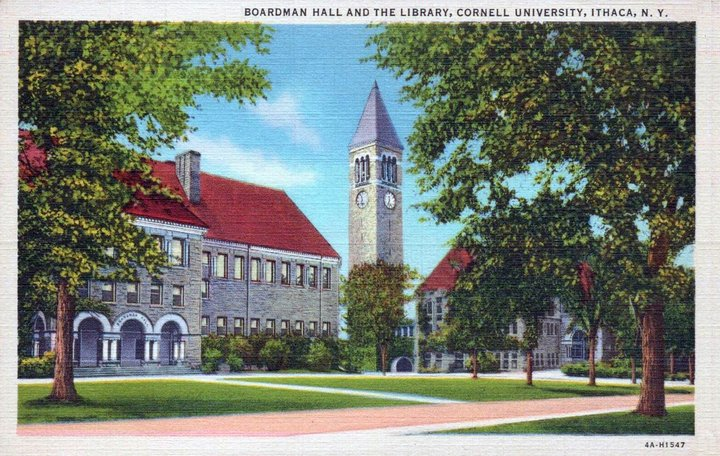
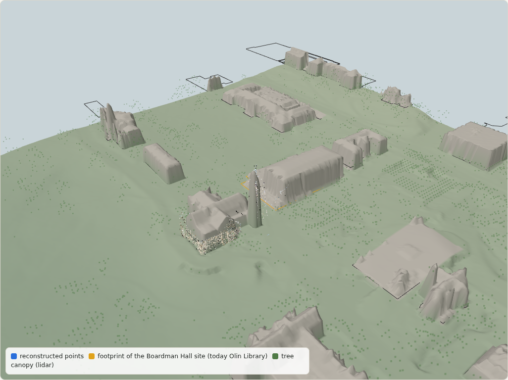
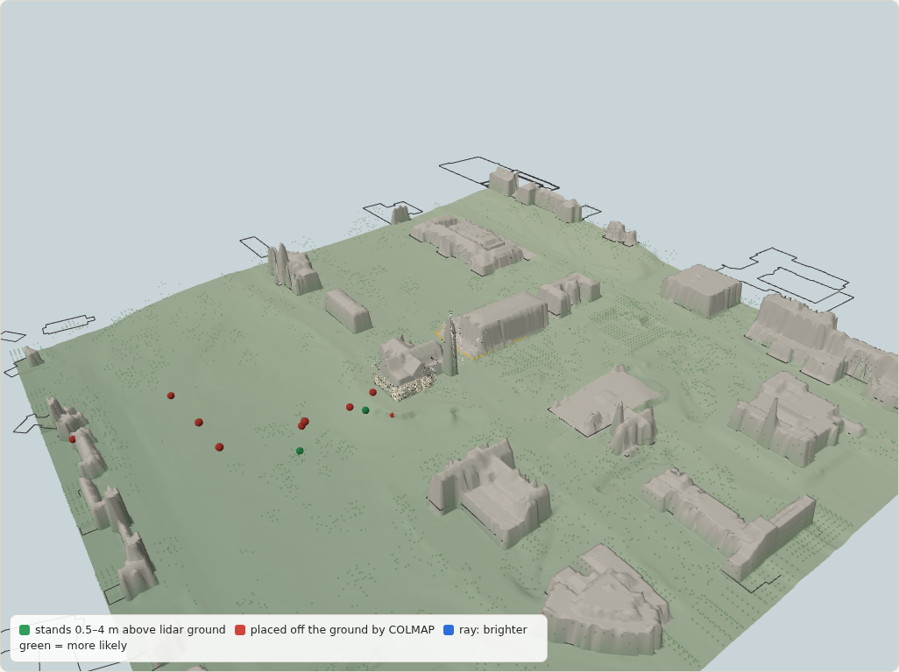
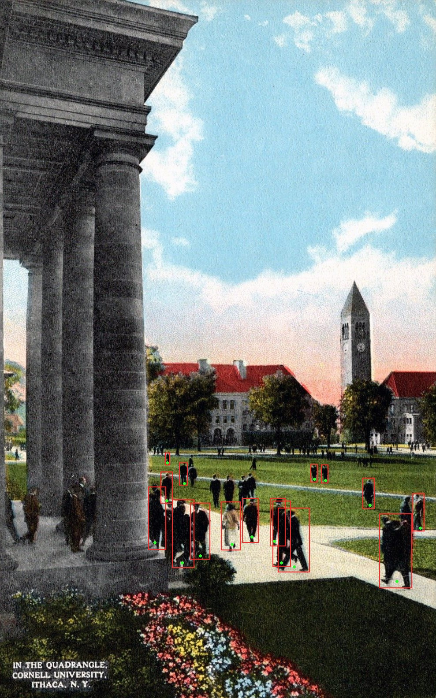
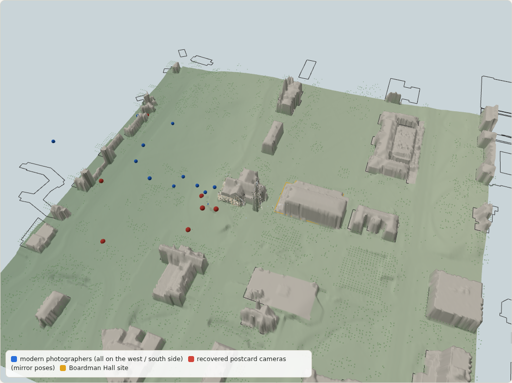

What can the surviving world prove about a building that no longer exists?
COLMAP, extended with things the world already knows: measured lidar ground, the camera's own EXIF focal length, and people.
Cornell Arts Quad · Boardman Hall (built 1892, demolished 1959; Olin Library stands on its site) · public-domain and Creative Commons photographs only, no annotation.

| Mapping (the 145-photo snapshot has 77 training photographs) | cameras per model | registered | focal ratio outside 0.5–3 |
|---|
Extension 1, EXIF-anchored calibration: photographs whose EXIF gives the focal length keep it fixed (constant_cameras); the rest are bounded.
Public-domain USGS airborne lidar ( points) and OpenStreetMap footprints. No geotags, no hand-picked points.

Bundle adjustment places modern photographers well off the measured ground, some 30–50 m in the air, with sub-2-pixel error.
Why: a distant camera can slide along its viewing ray while the focal length changes (the dolly-zoom ambiguity). Re-solving each one from just the tower and the library next to it:
m → m
Median 95 % interval along the viewing ray, anchors only → plus "the photographer stood on the measured ground".

Each postcard: for every focal length, COLMAP's pose solver places the camera through surviving anchors. The cost over all anchors is a likelihood along the ambiguity ray; extra cues reweight it.
| Photograph | anchors only | + measured ground | + people |
|---|
Width of the 95 % interval of the photographer's position along the viewing ray.
Pedestrians stand on today's measured ground and are about 1.70 m tall, at many depths — exactly the depth spread that breaks the dolly-zoom ambiguity.
m → m → m
anchors only → + measured ground → + people
Check the fit never used: at the best pose the people's implied heights have median m.
In the spirit of Virtual Correspondence (humans as geometry where surfaces don't overlap), but linking one photo to a measured ground across a century.


| Work | Does | Difference here |
|---|---|---|
| Photo Tourism; Scene Chronology (Snavely et al.) | browse and date internet photos in one 3D model | the subject no longer exists; uncertainty is the output |
| Virtual Correspondence (Ma et al., CVPR 2022) | humans as geometry between non-overlapping views | humans link one archival view to measured ground |
| Mikolka-Flöry et al. 2022–2026 | unknown-focal historical photos vs terrain, with uncertainty | near-field urban anchors, standpoint and people cues |
| Maiwald & Sardemann 2022 | shows historical resection failing when little survives | we work in that regime and measure it |
| Doppelgangers (Cai et al., ICCV 2023) | disambiguate look-alike structures | our mirror poses are this failure, across a century |
Live demo: ghostmap.html · code and reports: github.com/BobbyZbp/CS-6672